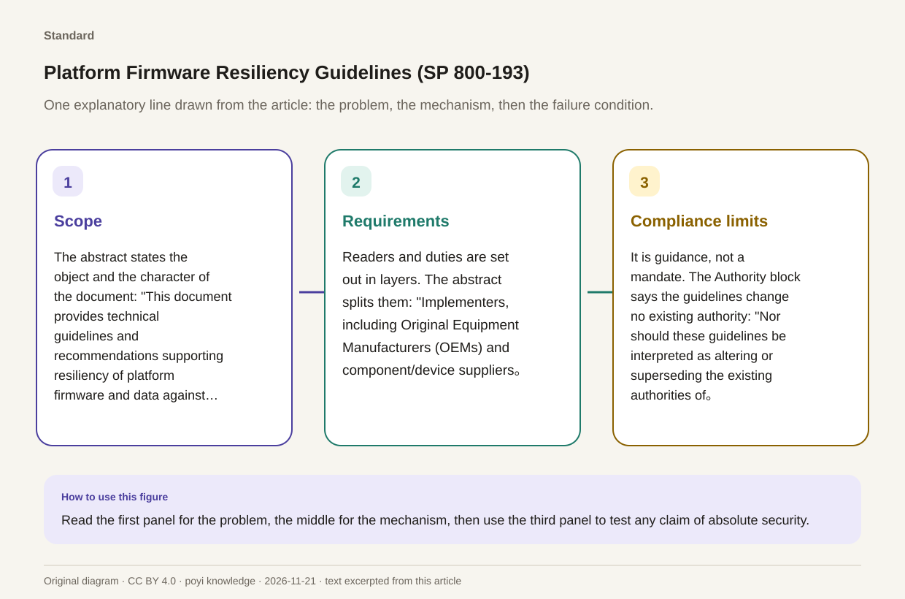
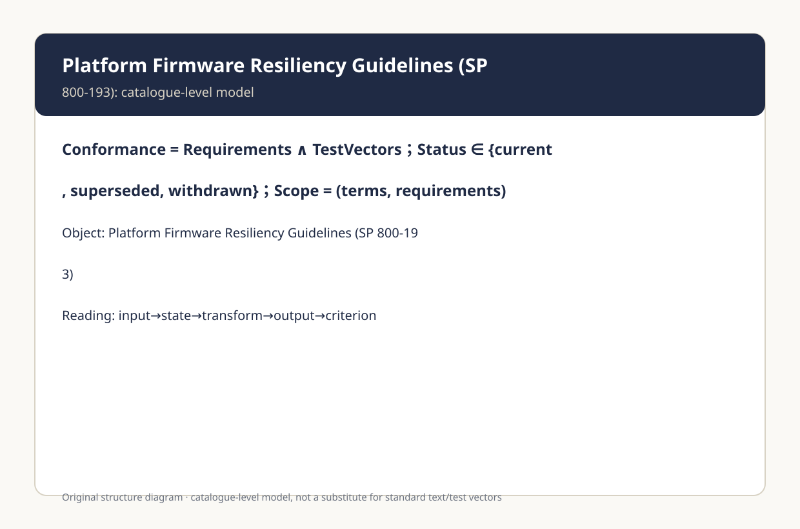

Principles
Standard: Platform Firmware Resiliency Guidelines (SP 800-193) (平台固件韧性指南（SP 800-193）). The abstract states the object and the character of the document: "This document provides technical guidelines and recommendations supporting resiliency of platform firmware and data against potentially destructive attacks." and defines its subject: "The platform is a collection of fundamental hardware and firmware components needed to boot and operate a system." The three principles are given in one abstract sentence: "The technical guidelines in this document promote resiliency in the platform by describing security mechanisms for protecting the platform against unauthorized changes, detecting unauthorized changes that occur, and recovering from attacks rapidly and securely." The executive summary repeats it — "These guidelines are based on the following three principles:" — and opens the list with "Protection: Mechanisms for ensuring that Platform Firmware code and critical data remain in a state of integrity and are protected from corruption". The output is therefore mechanism-level guidance rather than an algorithm specification: resiliency is split into protection, detection and recovery, each carried by implementable guidelines, and the object is firmware and its configuration data across the platform rather than one machine's boot firmware.

Why it matters
The risk is in the abstract: "A successful attack on platform firmware could render a system inoperable, perhaps permanently, or requiring reprogramming by the original manufacturer, resulting in significant disruptions to users." The executive summary says why repair is hard: "Much of this firmware is highly privileged in the system architectures, and because this firmware is necessary for the system to operate, repairing this firmware can be challenging." The gap in existing guidance is named next: "Earlier NIST publications have addressed the threat of attacks on one particular type of platform firmware: boot firmware, commonly known as the Basic Input/Output System (BIOS)." followed by "However, the platform consists of many other devices with firmware and configuration data." The four sentences give the shape of the gap: the loss need not be a disclosure but a long-lasting destruction of availability, repair depends on the original manufacturer, and earlier guidance covered only one class of firmware while the other devices carrying firmware and configuration data were left untreated.
Applications
Readers and duties are set out in layers. The abstract splits them: "Implementers, including Original Equipment Manufacturers (OEMs) and component/device suppliers, can use these guidelines to build stronger security mechanisms into platforms." and "System administrators, security professionals, and users can use this document to guide procurement strategies and priorities for future systems." Section 1.1 restates the aim: "The purpose of this document is to provide security guidelines to support system resiliency at a platform level." Section 4 gives the selection rule and the modality register: "Devices may implement the requirements in one or more of these sections based on the firmware resiliency properties, as defined in Section 3.2, they aim to support." and "The use of shall, should, and may are used as defined in RFC 2119 [5]." The items in §4.1.1 are shall-level: "The security mechanisms shall be founded in Roots of Trust (RoT)." and "All RoTs and CoTs shall either be immutable or protected using mechanisms which ensure all RoTs and CoTs remain in a state of integrity." Reader and duty differ accordingly: implementers work through the numbered items of §4, while administrators and buyers use the three properties mainly as procurement criteria. The shall-level items are not limited to the two quoted above: the same section also states in shall terms that "All elements of the Chains of Trust for Update, Detection and Recovery in non-volatile storage shall be implemented in platform firmware.", while other items fall to should or may under RFC 2119.

Limits & attacks
It is guidance, not a mandate. The Authority block says the guidelines change no existing authority: "Nor should these guidelines be interpreted as altering or superseding the existing authorities of the Secretary of Commerce, Director of the OMB, or any other federal official." and puts use outside federal systems on a voluntary footing: "This publication may be used by nongovernmental organizations on a voluntary basis and is not subject to copyright in the United States." Section 1.3 narrows the threat set: "The goal of this document is to provide principles and guidelines that can support platform resiliency primarily against remote attacks." Section 1.4 marks part of the text as background only: "Section 2 provides informative material describing platform components and architectures." The Audience section states the prerequisite: "The technical guidelines assume readers have expertise in the platform architectures and are targeted primarily at developers and engineers responsible for implementing firmware-level security technologies in systems and devices." The limits stack: the guidelines add no mandate of their own, the threat set is centered on remote attack, §2 declares itself background material, and the text presumes expertise in platform architectures on the reader's side.
History
The first title-block line reads "NIST Special Publication 800-193", the author and division line reads as one sequence "Andrew Regenscheid Computer Security Division Information Technology Laboratory", and the free-access line reads "This publication is available free of charge from:" followed by the DOI 10.6028/NIST.SP.800-193. The citation in the Authority block carries the date and length: "Natl. Inst. Stand. Technol. Spec. Publ. 800-193, 45 pages (May 2018)", a May 2018 publication, and the front matter contains no statement of supersession. The acknowledgements bind author and reviewers together: "The author, Andrew Regenscheid of the National Institute of Standards and Technology (NIST), wishes to thank his colleagues who reviewed drafts of this document and contributed to its technical content." and list the outside experts, beginning "These experts included Chirag Schroff from Cisco; Mukund Khatri from Dell;".
Worked example & verification
Formal model and reproduction steps
[S=\min_i S_i,\quad S_i\in{\text{密钥强度},\text{分组安全},\text{实现安全}}]
Platform Firmware Resiliency Guidelines (SP 800-193): the registered public parameters, key material or randomness, and message are mapped through the stated transformation to an output checked against the registered criterion. The worked example is a structural reproduction, not a new test vector; parameter ranges, standard versions and implementation details remain source-bound.
References
- Wikipedia search entry for 平台固件韧性指南（SP 800-193）. https://zh.wikipedia.org/w/index.php?search=%E5%B9%B3%E5%8F%B0%E5%9B%BA%E4%BB%B6%E9%9F%A7%E6%80%A7%E6%8C%87%E5%8D%97%EF%BC%88SP%20800-193%EF%BC%89
- Handbook of Applied Cryptography (Menezes, van Oorschot, Vanstone). https://www.cacr.math.uwaterloo.ca/hac/